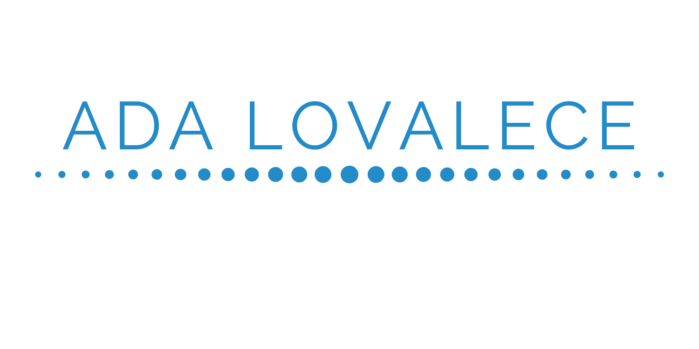
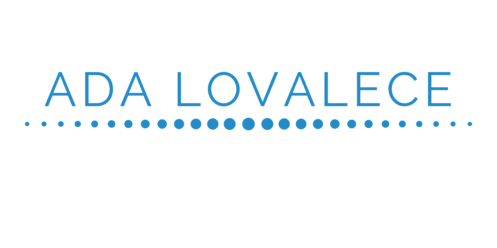

Ada Lovelace, ou Augusta Ada King, a Condessa de Lovelace foi uma das precursoras das ciências da computação. Seu trabalho estava relacionado à metodologia de cálculo de uma sequência de números de Bernoulli, sequências de racionais com operações altamente complexas. Em 1843, Ada fazia a tradução de textos de um matemático italiano, sobre ferramentas analíticas usadas por Charles Babbage, um matemático inglês. Fruto desta tradução, surgiu o que, para inúmeroa especialistas, é considerado o primeiro algoritmo da história, muito tempo antes da existência de máquinas capazes de processá-lo. Em virtude da época, os estudos de Ada ficaram apenas no papel, porém, com o surgimento dos computadores, seu algoritmo foi testado e dado como correto. Atualmente, Ada dá o nome a um prêmio da Sociedade Britânica de Computação que comtempla avanços significativos em sistemas de informação. Ada foi uma das principais mulheres que revolucionaram o mundo atráves da tecnologia.